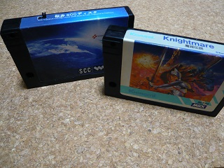
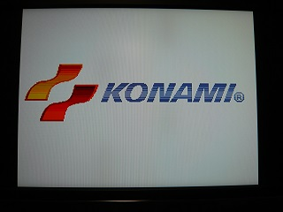
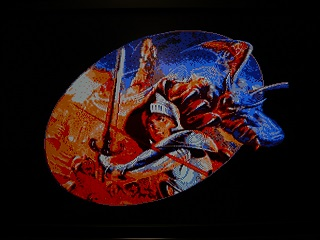
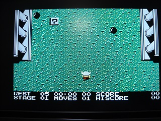

魔城伝説のSCC版
コナミの魔城伝説。発売当初は当然SCCも無く、PSGの音楽でした。
この音楽のSCC版を聞くための手段として有名なのは、「コナミゲームコレクション Vol.1 アクションシリーズ」に収録されている魔城伝説を「スナッチャー」に付属しているSCCカートリッジを使って遊ぶことです。といっても「スナッチャー」の中古は高く、「SDスナッチャー」に付属しているSCCカートリッジではRAMを増設しないと使えません。似非SCCやSCC付きメガロムゲームで動作させるためのパッチはどこかにあったと思いますが・・・。
次善の策としては・・・TINY野郎さんが公開されているNandemoSCCを使うことでしょうか。これなら似非SCC等でもSCCで音が聞けます。ただし、これはあくまで本来PSGでなるべき音をSCCでならしているものですので、SCC版と言えるかは微妙なところですが、似非SCCやSCC付きメガロムゲームで鳴らすことが出来ます。
最後の手段としてブラジルの有志が作った「Knightmare Gold」というものがあるようです。魔城伝説の海外での名称がKigntmareです。Knightmar Goldは、魔城伝説にパッチをあてて色やスクロールなどを改善するだけで無く、音も改良しています。元々はIDE接続のCD-ROMで鳴らすことができるように作られたようですが、SCC版のサウンドも慣らせるようになっているようです。
準備するものは、「魔城伝説」とスナッチャーやSDスナッチャーの「SCCカートリッジ」もしくは「似非SCC」などのSCC付きメガロムゲームです。「魔城伝説」はにがさん作の"NSSAVE.COM"等を使用してファイル化しておく必要があります。「魔城伝説」とパッチプログラム等を合わせても100kB程度ですのでフロッピーディスクからも実行可能です。

あとはMSX-DOS(2)からプログラムを起動するだけです。
起動時のロゴも最近のものに。

タイトル画面も綺麗に。

ゲーム画面もカラフルに？

日本でもスナッチャーのパッチが作られたりしていますが、海外の方のゲーム愛（！？）は本当にすごいですね。グラディウス２のパッチもそうですが、ゲーム自体を格段にバージョンアップしてしまいます。本当にすごいのは、ここまで愛されるゲームを沢山世に送り出してきたコナミなのでしょう。